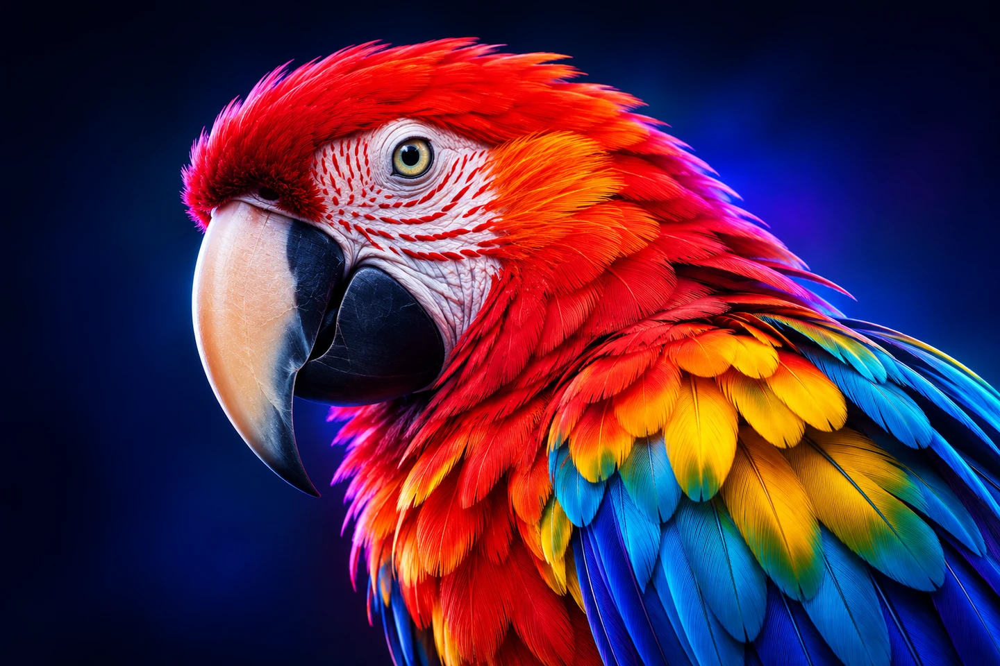

01 / HUE
01 / HUE
Hue is the angle
Move around the disk to explore the color family: red, yellow, green, cyan, blue or violet. A complete turn is 360°.
Capture any color on your Mac, explore vibrant harmonies, discover 300 web-ready palettes and turn every shade into a design system.

Explore 300 web-ready palettes—30 selected and 270 original PixNab compositions—preview them on a website and save your favorites.

Transforme une couleur en onze nuances cohérentes, du 50 au 950. Exporte-les directement en variables CSS, JSON ou SwiftUI.
:root {
--brand-100: #d1ffcc;
--brand-500: #00f900;
--brand-900: #003100;
}
Explore hue, saturation and lightness with a native color wheel. Create intentional palettes in seconds, then save, copy or export them.
The color wheel is more than a rainbow. Its geometry reveals relationships you can use to create contrast, coherence and hierarchy in a website or interface. Here is how PixNab turns color theory into a practical workflow.
01 / HUE
Move around the disk to explore the color family: red, yellow, green, cyan, blue or violet. A complete turn is 360°.
 02 / SATURATION
02 / SATURATION
Drag toward the center for muted, neutral colors; move outward for stronger saturation. Position and angle work together.
 03 / LIGHTNESS
03 / LIGHTNESS
Use the narrow ring to move from HSL lightness 0% (black) to 100% (white). Inside the disk, choosing a new hue or saturation resets lightness to 50%.
PixNab's wheel generates HSL color suggestions in sRGB. HSL lightness is not the same as perceived brightness, and harmonies are design suggestions—not measurements of a captured Display P3 color.

Web interfaces live on screens, which mix red, green and blue light. Their secondary colors are cyan, magenta and yellow; the intermediate hues complete the twelve-step wheel. Traditional painting wheels often start with red, yellow and blue instead. PixNab uses digital HSL/sRGB relationships.
Choose a scheme based on the visual problem you are solving. Each original illustration below shows the relative angles used by PixNab, plus a practical web-design use case.

Opposites attract. Two colors facing each other create strong contrast and make primary actions stand out.
Best for: call-to-action buttons, product highlights, hero banners.
Neighbors feel natural together. Use one dominant shade and the other two as restrained accents.
Best for: serene dashboards, nature brands, editorial gradients.
Three evenly spaced hues add energy without relying on a single opposite. Balance matters: do not give every color equal visual weight.
Best for: playful products, illustrations, creative portfolios.
Four hues create a powerful, expressive system. Let one lead; use the others sparingly for categories, states and accents.
Best for: data visualization, creative campaigns, multi-category sites.
Keep the hue and saturation; vary lightness. PixNab offers the selected color plus one 10-point HSL lightness variation.
Best for: minimalist interfaces, tonal components, low-noise layouts.A balanced page often feels better when a neutral background carries most of the layout, a dominant color builds identity, and accents appear only where they help.
Tip: check text contrast separately; a harmonious palette is not automatically accessible.A small interactive illustration of the same five HSL harmony rules. Choose a base hue, saturation and lightness, then tap a swatch to copy its HEX value.
The markers represent hue positions. Use PixNab's native wheel for actual color editing.
Click a color swatch to copy its HEX code.
Choose your base from a brand color or a real pixel. Decide which color should attract attention and which should stay neutral.
Use the base for primary actions, a neutral for backgrounds, and harmony colors for controlled accents—not every surface.
Verify text/background contrast. WCAG AA generally requires 4.5:1 for normal text and 3:1 for large text; color harmony alone cannot ensure this.
Further reading on color theory: Canva Color Wheel ↗ · WCAG contrast ↗. All diagrams on this page are original PixNab illustrations, not Canva assets.
Du plumage écarlate aux reflets bleus, trouve exactement la couleur que tu cherches. La loupe agrandit la zone réellement visée, sans approximation.

Récupère la bonne valeur en HEX, RGB, HSL, OKLCH, CSS ou Swift. Garde ton historique à portée de main et exporte tes palettes vers tes outils préférés.


Explore the actual interface: all 12 new screenshots, from Color Studio to the native editor, precision magnifier and preferences. No fake app windows.


All screenshots were supplied from PixNab on macOS. Click any image to view it in full.
Un outil natif, précis et pensé pour les designers, développeurs et amoureux des couleurs.
Les fichiers d'installation publics seront proposés via GitHub Releases lorsqu'ils seront disponibles.